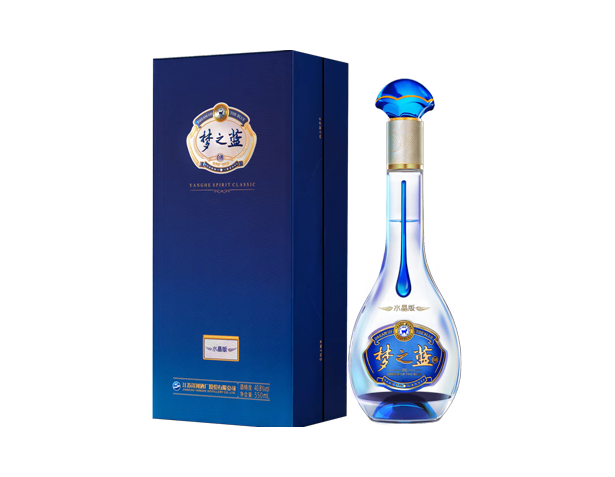

传统工艺：梦之蓝水晶版采用代代相传的洋河传统酿造技术，确保酒体丰富、口感复杂。
陈酿工艺：酒体在专门设计的酒窖中经过长时间陈酿，让酒香得以充分发展和成熟。
优质原料：精选优质粮食和纯净水源，确保酒的最高品质。

梦之蓝水晶版
晶亮绵润 超值超量。梦之蓝水晶版产自梦之蓝酒区，甄选50年窖池酿造特级酒，主体基酒贮存5年以上，辅以10年以上不同风格窖藏陈年调味酒精心调味，酒液晶亮明澈，细品绵厚圆润，畅饮淋漓尽致。

工艺
口感
酒体丰满：白酒具有丰富、饱满的风味，包含花香、果香和粮香的复杂香气。
入口顺滑：入口顺滑，带有细腻的甜味，回味悠长，柔和持久。
层次丰富：多层次的风味在品尝过程中逐步展现，提供复杂而愉悦的饮酒体验。
入口顺滑：入口顺滑，带有细腻的甜味，回味悠长，柔和持久。
层次丰富：多层次的风味在品尝过程中逐步展现，提供复杂而愉悦的饮酒体验。


外观
水晶瓶：采用高质量水晶制作的瓶身，设计美观大方，彰显产品的高端品质。
精致包装：包装设计优雅奢华，常采用精美设计和高端材质，适合作为礼品。
独特品牌形象：设计结合了传统中国元素和现代风格，突出品牌的历史和创新。
精致包装：包装设计优雅奢华，常采用精美设计和高端材质，适合作为礼品。
独特品牌形象：设计结合了传统中国元素和现代风格，突出品牌的历史和创新。
其他
高收藏价值：梦之蓝水晶版不仅是饮品，更是具有收藏价值的艺术品，因其精美包装和限量供应。
地位象征：拥有和品尝这款白酒被视为地位和品味的象征，常与奢华和威望联系在一起。
文化传承：反映了洋河丰富的文化遗产，结合了古老传统和现代奢华。
地位象征：拥有和品尝这款白酒被视为地位和品味的象征，常与奢华和威望联系在一起。
文化传承：反映了洋河丰富的文化遗产，结合了古老传统和现代奢华。

适合场景

商务人士

高端社交

高端礼品